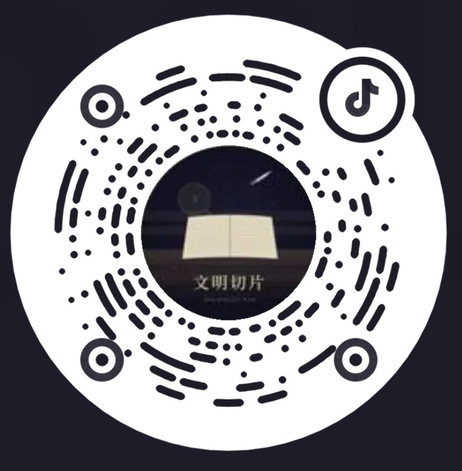

中国历史给我们的当代启示
所谓前所未有的大变局，拆开来看，每一个零件历史上都演过无数遍。技术在变，工具在变，但人性从来没有变过。
少一点即时反应，多一点把问题放回长时段里的耐心。
所谓前所未有的大变局，拆开来看，每一个零件历史上都演过无数遍。技术在变，工具在变，但人性从来没有变过。
每日投资市场日报 | 2026-05-21
2026 年 5 月 20 日投资市场日报已整理为网页阅读版，保留原文表格、图示和重点提示。
北向资金净流入 42.68 亿元，电力改革、脑机接口成为新质生产力主线，国务院两大万亿规划落地。
OpenAI 完成新一轮融资，AI 基础设施竞争继续升温。
今日Anthropic 安全研究引发模型自主发现漏洞的新讨论。
今日Cerebras IPO 表现强劲，算力叙事再次进入资本视野。
今日国产算力生态继续推进，软硬件协同成为长期主题。
今日数字艺术进入传统拍卖夜场，创作与收藏的边界继续移动。
2 天前对话、图像、视频、3D 与模型平台，一站直达。适合写作者、创作者和所有想降低工具摩擦的人。
